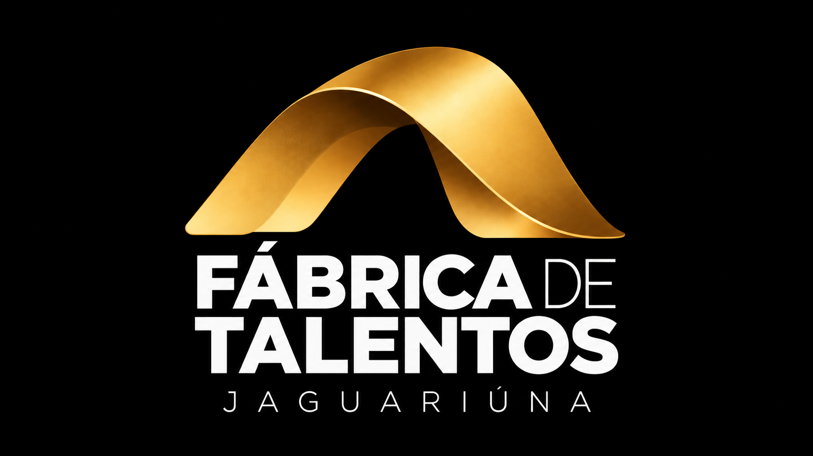
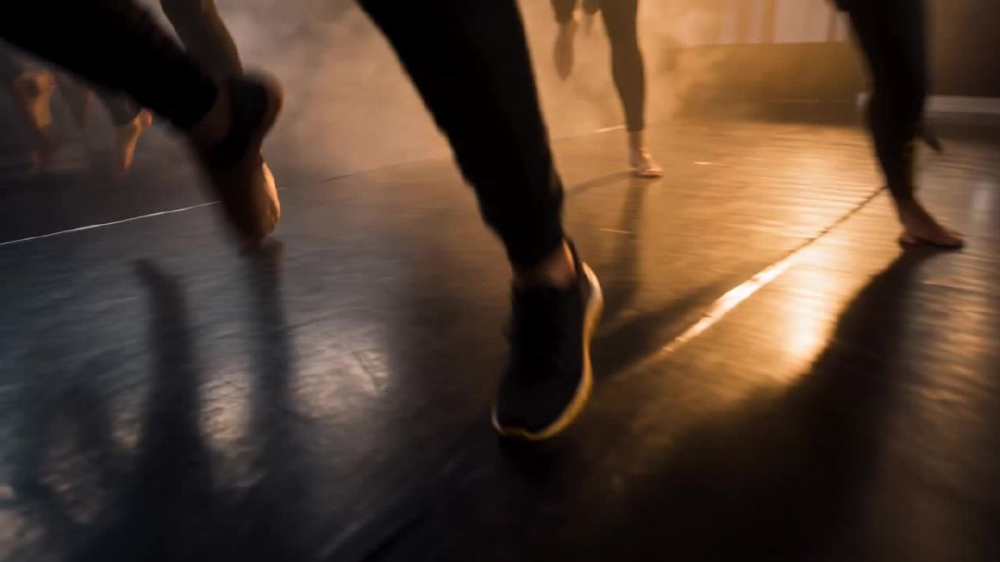

O TALENTO GANHA FORMA.
Formação gratuita para novos caminhos.
Com direito ao DRTCurso técnico de teatro musicalGratuito40 vagas1.000 horas
Inscrições online de 28/10 a 20/11/2026
Inscreva-seA Fábrica de Talentos Jaguariúna é um curso técnico gratuito de teatro musical promovido pela Secretaria Municipal de Cultura de Jaguariúna, em parceria com a Unifaj.
Sem custo para os participantes.
Turma com 40 participantes.
1.000 horas em 3 módulos semestrais (18 a 24 meses), presencial.
Unifaj – Campus II, Rod. Dr. Gov. Adhemar Pereira de Barros, km 127, Pista Sul, Tanquinho Velho, Jaguariúna/SP.
Diploma de Técnico em Teatro com ênfase em teatro musical, validade nacional, com direito ao DRT.
Unifaj
Quem concluiu o ensino médio ou está cursando a partir da 2ª série do ensino médio.
Encerramento das inscrições em
20/11/2026, 23h59 (horário de Brasília) — horário de encerramento [A CONFIRMAR]
[A CONFIRMAR: link do formulário]
Não. A formação é gratuita.
40 vagas.
Quem concluiu o ensino médio ou está cursando a partir da 2ª série do ensino médio. O diploma técnico é conferido mediante a conclusão do ensino médio.
Online, de 28/10 a 20/11/2026, pelo formulário próprio desta página.
Por processo seletivo com avaliação de aptidão artística. É preciso ter disponibilidade para atividades práticas e apresentações, inclusive aos fins de semana.
Início: [A CONFIRMAR] · Local: Unifaj – Campus II, Rod. Dr. Gov. Adhemar Pereira de Barros, km 127, Pista Sul, Tanquinho Velho, Jaguariúna/SP.
1.000 horas (210 teóricas e 790 práticas), em 3 módulos semestrais, com duração de 18 a 24 meses.
Sim. Ao concluir os 3 módulos e o ensino médio, o aluno recebe o diploma de Técnico em Teatro com ênfase em teatro musical, com validade nacional e direito ao DRT. Quem concluir o Módulo 2 sem reprovação recebe certificação intermediária de assistente de direção de espetáculos.
O curso é realizado em parceria com a Unifaj. Detalhes [A CONFIRMAR]

Um espaço para o talento ganhar forma.
Endereço e previsão [A CONFIRMAR]